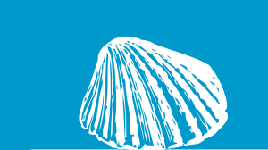

| 活動體驗… 騎馬體驗．製酒DIY．鹹蛋DIY．貝殼DIY |
為了增加親子體驗的項目，林老闆特別和位於伸港的美好媽媽工作室合作，聘請手工藝老師教導大家製作名片夾、青蛙筆、漂流木風鈴及貝殼風鈴，每種作品的材料都巧妙的運用貝殼來裝點美化。老師自豪的說，所有成品都是回收再利用製成，保證是「尚天然」的。
今天採訪時正好有個大家族前來體驗這項手工藝。這些作品只需三十分鐘便能完成，不僅如此，每個作品都既實用又美觀。
後記： 我所製作的是青蛙筆，因為是自己親手打造，不管怎麼看，總覺得它十分可愛。製作時間不長，所需材料有：六個同色系的貝殼(半顆)，兩個圓圓大大的活動眼睛，一個穿洞的木頭，一支可插入木頭的原子筆及熱熔膠；製作方法:先將木頭中擠些熱熔膠，再放入筆蓋；接著是製作青蛙，先挑一個貝殼黏在木頭上（當腳），再挑兩個相似的貝殼當嘴巴，然後挑個貝殼當身體與嘴巴結合再黏到腳上，再將剩餘兩個貝殼分別黏在身體兩邊（當手），就能完成這項作品。今天所製作的作品剛好可美化家裡的留白空間，也可隨時拿筆來紀錄東西，不但美觀也很實用。 |